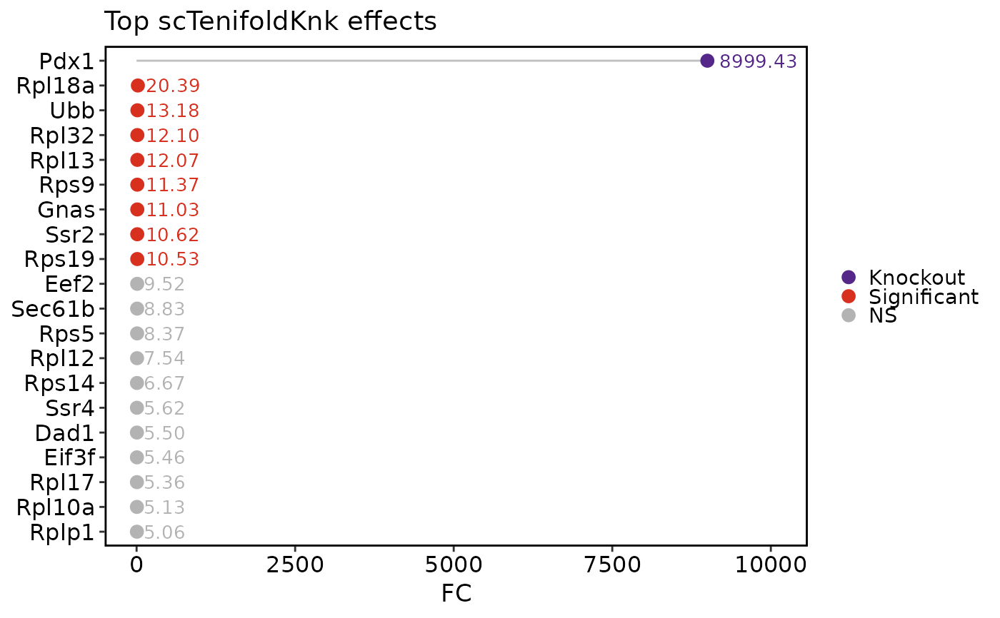

Run the official scTenifoldKnk 2.0 workflow, including quality control, CPM normalization, network construction and perturbation analysis. Retain the upstream results in a Seurat object for scTenifoldKnkPlot.
Usage
RunscTenifoldKnk(
object,
gKO = NULL,
assay = NULL,
layer = "counts",
features = NULL,
qc = TRUE,
qc_mt_threshold = 0.1,
qc_min_library_size = 1000,
qc_min_pct = 0.05,
qc_remove_outlier_cells = TRUE,
nc_lambda = 0,
nc_nNet = 10,
nc_nCells = 500,
nc_nComp = 3,
nc_scaleScores = TRUE,
nc_symmetric = FALSE,
nc_q = 0.9,
td_K = 3,
td_maxIter = 1000,
td_maxError = 1e-05,
td_nDecimal = 3,
ma_nDim = 2,
cores = 1,
store_networks = TRUE,
store_manifold = TRUE,
tool_name = "scTenifoldKnk",
verbose = TRUE,
srt = NULL,
nc_priorNetwork = NULL,
ma_method = NULL,
ma_heatT = 10,
dr_empiricalNull = FALSE,
dr_direction = TRUE,
dr_directionT = 5,
dr_directionRegressLibSize = FALSE,
transcriptomeWide = FALSE,
seed = 1
)Arguments
- object
A
Seuratobject.- gKO
Gene symbols to knock out together. In transcriptome-wide mode, each gene is knocked out separately;
NULLselects all retained genes.- assay
Assay to use.
NULLuses the default assay.- layer
Assay layer containing raw counts.
- features
Optional genes to retain before the upstream workflow. Requested knockout genes are retained when present in the assay.
- qc
Whether to apply upstream quality control.
- qc_mt_threshold
Maximum mitochondrial read fraction.
- qc_min_library_size
Minimum cell library size.
- qc_min_pct
Minimum fraction of retained cells expressing a gene. The upstream filter retains genes strictly above this fraction.
- qc_remove_outlier_cells
Whether to remove library-size outliers.
- nc_lambda, nc_nNet, nc_nCells, nc_nComp, nc_scaleScores, nc_symmetric, nc_q, nc_priorNetwork
Network construction parameters passed to
scTenifoldKnk::scTenifoldKnk().- td_K, td_maxIter, td_maxError, td_nDecimal
Tensor decomposition parameters passed to the upstream workflow.
- ma_nDim
Number of manifold-alignment dimensions.
- cores
Number of cores passed upstream as
nCores.- store_networks
Whether to retain the upstream WT network.
- store_manifold
Whether to retain manifold-alignment coordinates.
- tool_name
Name of the
object@toolsentry.- verbose
Whether to print the message. Default is
TRUE.- srt
Deprecated alias for
object; supply exactly one of the two. It will be removed in scop 1.0.0.- ma_method
Comparison method:
"manifold"or"heat". WithNULL, upstream uses manifold alignment for single or joint knockouts and heat alignment for transcriptome-wide screens. The two methods produce different distances; heat alignment has no manifold coordinates to plot.- ma_heatT
Diffusion time for heat alignment.
- dr_empiricalNull
Whether to use Efron's empirical null; requires locfdr.
- dr_direction
Whether to include predicted response directions.
- dr_directionT
Diffusion time for direction prediction.
- dr_directionRegressLibSize
Whether to regress library size out of the expression used for direction prediction.
- transcriptomeWide
Whether to knock out each target gene separately.
- seed
Random seed passed upstream.
NULLuses the caller's RNG; otherwise the upstream workflow restores the caller's RNG state.
Value
A Seurat object with the upstream result, parameters and package
version stored in object@tools[[tool_name]]. Single and joint knockouts
also expose diffRegulation directly in that entry.
Details
Requires scTenifoldKnk 2.0.0 or later. The former backend parameter and
qc_min_cells count threshold have been removed; use qc_min_pct for
upstream gene filtering. QC and statistical results can differ from earlier
scop runs. Response directions are predictions, not measured expression
changes. Transcriptome-wide matrices are retained in result; the existing
plots visualize single or joint knockout differential-regulation tables.
Examples
data(pancreas_sub)
counts <- GetAssayData5(pancreas_sub, assay = "RNA", layer = "counts")
detected <- names(sort(Matrix::rowSums(counts > 0), decreasing = TRUE))
pancreas_sub <- RunscTenifoldKnk(
pancreas_sub,
gKO = "Pdx1",
features = head(detected, 300),
qc = FALSE,
nc_nNet = 3,
nc_nCells = 200,
td_maxIter = 200,
store_networks = TRUE,
seed = 1
)
#> ℹ [2026-10-26 15:19:52] Run the upstream scTenifoldKnk workflow
#>
#> ── scTenifoldKnk Pipeline ──────────────────────────────────────────────────────
#> ℹ Step 2/7: CPM normalization
#> ℹ CPM normalization: 301 genes x 1000 cells
#> ✔ CPM normalization complete
#> ℹ Step 3/7: Building gene regulatory networks
#> ℹ Building 3 gene regulatory networks (200 cells each)
#> ✔ Network construction complete: 3 networks
#> ℹ Step 4/7: Tensor decomposition
#> ℹ [X] Tensor: 301 x 301 x 3 (K=3)
#> ✔ [X] CP decomposition complete (norm explained: 34.6%)
#> ℹ Step 5/7: Simulating Pdx1 knockout
#> ℹ Step 6/7: Manifold alignment
#> ℹ Manifold alignment: 301 shared genes, d=2
#> ✔ Manifold alignment complete: 2 dimensions
#> ℹ Step 7/7: Differential regulation analysis
#> ℹ Computing distances for 301 genes
#> ✔ Differential regulation complete: 9/301 significant genes (FDR < 0.05)
#> ✔ scTenifoldKnk pipeline complete
#> ✔ [2026-10-26 15:19:52] scTenifoldKnk results stored in `object@tools[[scTenifoldKnk]]`
head(pancreas_sub@tools$scTenifoldKnk$diffRegulation)
#> gene distance Z FC p.value p.adj direction
#> 301 Pdx1 8.963879e-05 4.420455 8999.42556 0.000000e+00 0.0000000000 down
#> 57 Rpl18a 4.266911e-06 1.754548 20.39154 6.310812e-06 0.0009497772 up
#> 11 Ubb 3.430468e-06 1.610412 13.18043 2.828873e-04 0.0283830220 down
#> 44 Rpl32 3.287092e-06 1.582815 12.10171 5.037573e-04 0.0307722755 up
#> 60 Rpl13 3.283392e-06 1.582090 12.07448 5.111674e-04 0.0307722755 up
#> 51 Rps9 3.185577e-06 1.562662 11.36578 7.480971e-04 0.0375295391 up
#> directionScore
#> 301 NA
#> 57 0.003292538
#> 11 -0.004022592
#> 44 0.003147216
#> 60 0.002897119
#> 51 0.002487118
scTenifoldKnkPlot(pancreas_sub, plot_type = "effect")
